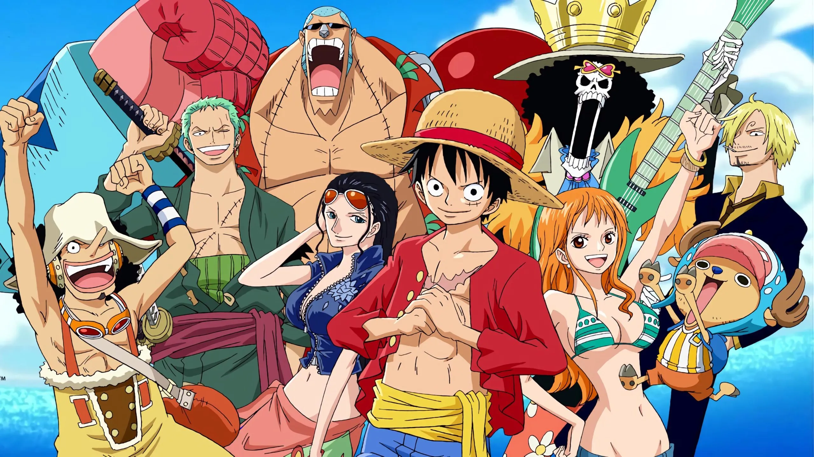
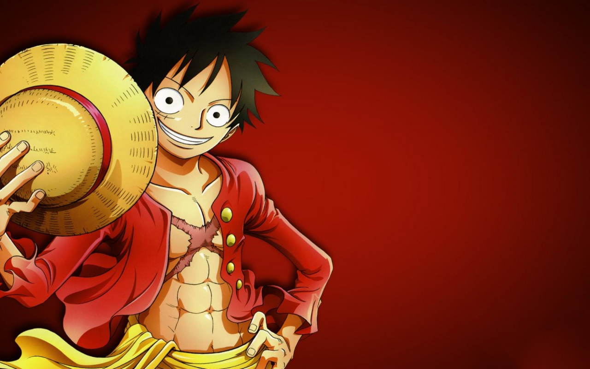

🏴☠️ Who is Luffy?
My favorite anime character



Monkey D. Luffy is the protagonist of the One Piece anime and manga
series. He is a pirate with the goal of finding the One Piece treasure
and becoming the Pirate King. Luffy is known for his straw hat and his
ability to stretch his body like rubber due to eating the Gum-Gum
Fruit.
📖
Learn more about Luffy
Coded by 👩💻 Vaibhavi with HTML, CSS and JavaScript